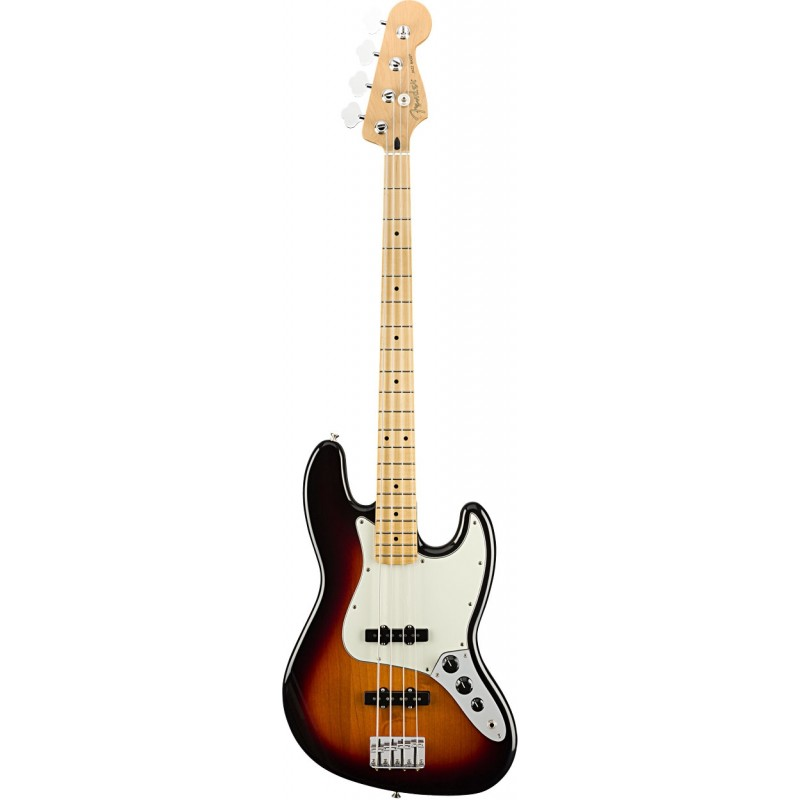
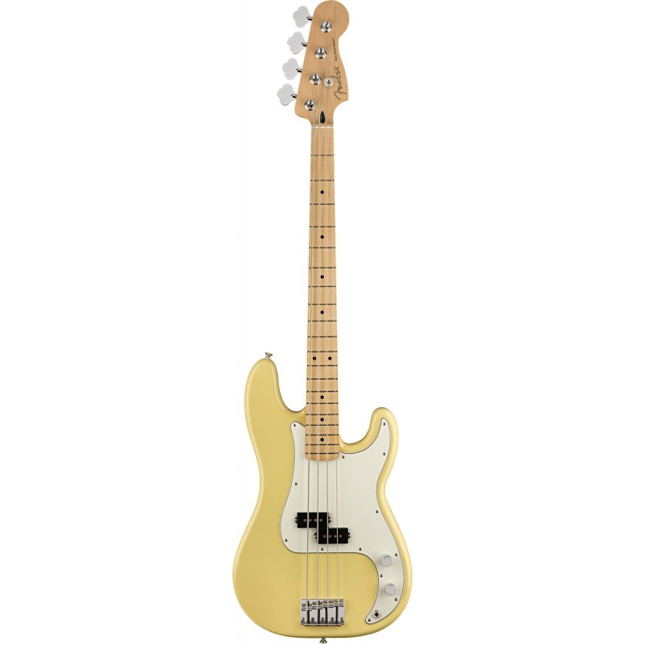
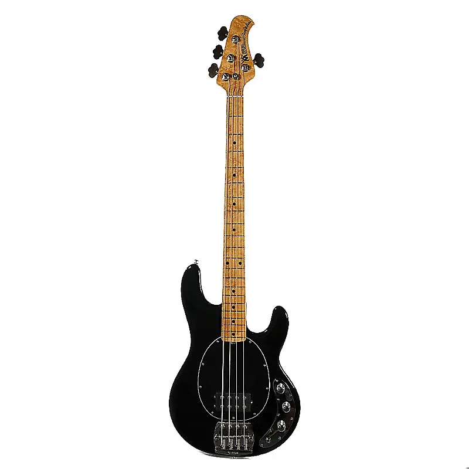
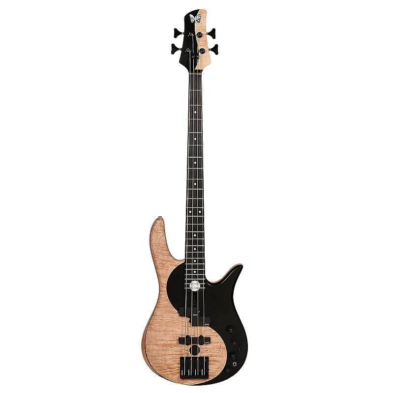

Tienda de bajos
|  |
Fender Jazz Bass$1.199.990 El Fender Jazz Bass es un instrumento clásico y, por su versatilidad, ha sido uno de los instrumentos más usados por músicos de todos los géneros6 Ha sentado en auténtico estándar en la fabricación de bajos eléctricos y aún hoy, es un modelo con el que se comparan todos los nuevos diseños. |
|  |
Fender Precision Bass$1.090.000 Un signo de la importancia y el valor histórico de este instrumento, que ha revolucionado la historia de la música popular desde su creación en 1951 es el hecho de que durante muchos años las asociaciones americanas de músicos han empleado el término "Fender bass" o "Precision bass" como sinónimos de "Electric bass". |
|  |
Musicman Stingray$2.499.900 El bajo Stingray es una de las creaciones de mayor éxito de Leo Fender, quien supo aprovechar el espíritu de los tiempos dando a los músicos de las nuevas generaciones un instrumento que respondía a sus nuevas necesidades. El sonido del Stingray, agresivo y afilado, resultó perfecto para las nuevas exigencias de géneros tan distintos como el funk y el rock |
|  |
Fodera Ying Yang$4.990.000 Dentro de la enorme variedad de modelos y diseños que ofrece la firma neoyorkina Fodera Guitars, el Monarch es sin duda un bajo mítico ya que este fue el primer modelo que desarrollaron. El más famoso sin duda es el Monarch que en 1983 construyeron para un joven y desconocido Victor Wooten y que vino a revolucionar el mundo del bajo eléctrico moderno. |